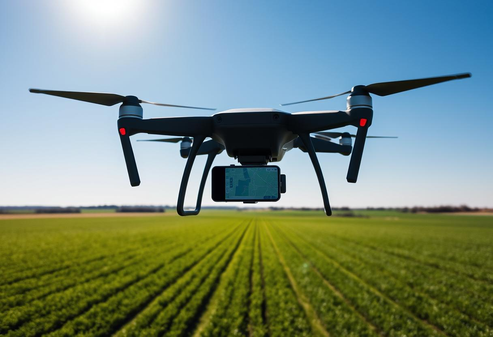

Precisa de Georreferenciamento?
Entre em contato conosco e solicite um orçamento personalizado para seu projeto. Nossa equipe está pronta para atender suas necessidades com a máxima qualidade e agilidade.

O georreferenciamento é um processo técnico que permite localizar e delimitar áreas geográficas com alta precisão, utilizando coordenadas geográficas e sistemas de referência geodésicos. É uma tecnologia essencial para garantir a segurança jurídica de propriedades rurais e urbanas.
Garante a regularização legal da propriedade
Delimita exatamente os limites da propriedade
Atende às exigências do INCRA e cartórios

Do levantamento de campo à entrega dos documentos finais
Utilizamos GPS geodésico, estações totais e drones para capturar dados precisos do terreno, incluindo coordenadas, limites e características topográficas.
Os dados coletados são processados em softwares especializados, aplicando correções matemáticas e ajustes para garantir máxima precisão.
Criamos plantas topográficas, memoriais descritivos e toda documentação técnica necessária para a regularização.
Finalizamos com a certificação técnica e entregamos toda documentação pronta para protocolo no INCRA e cartórios.
Equipamentos de última geração para garantir a máxima precisão em nossos levantamentos
Receptores GNSS de alta precisão que utilizam correções RTK para obter coordenadas com precisão centimétrica.
Aeronaves não tripuladas equipadas com câmeras de alta resolução para levantamentos aerofotogramétricos.
Equipamentos eletrônicos que combinam teodolito e distanciômetro para medições angulares e lineares precisas.
Utilizamos os melhores softwares de topografia e geodésia para processamento e análise dos dados coletados.
Mais de 10 anos de experiência em georreferenciamento com centenas de projetos concluídos com sucesso.
Utilizamos os equipamentos mais modernos do mercado para garantir precisão e agilidade nos levantamentos.
Comprometimento com cronogramas estabelecidos, entregando seus projetos sempre dentro do prazo acordado.
Acompanhamos todo o processo, desde o levantamento até a aprovação final nos órgãos competentes.
Entre em contato conosco e solicite um orçamento personalizado para seu projeto. Nossa equipe está pronta para atender suas necessidades com a máxima qualidade e agilidade.